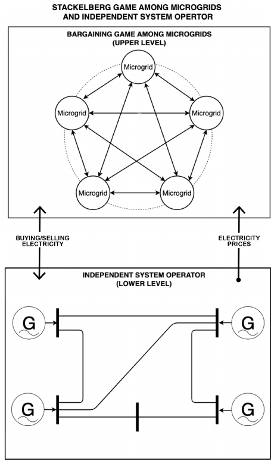
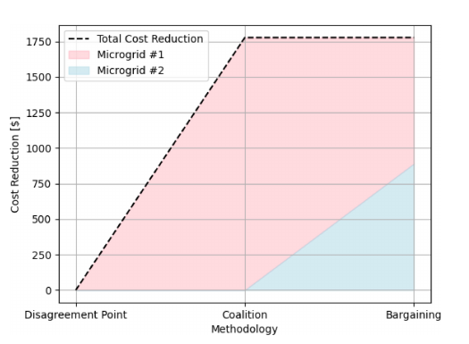
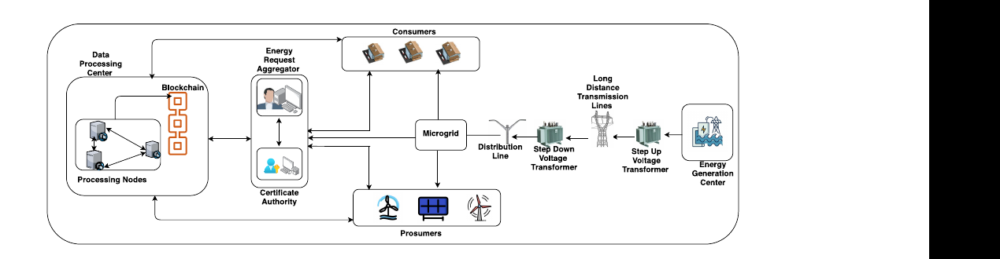
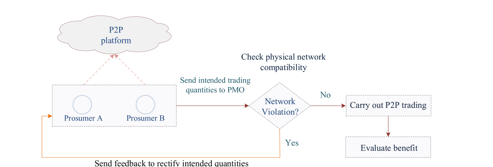
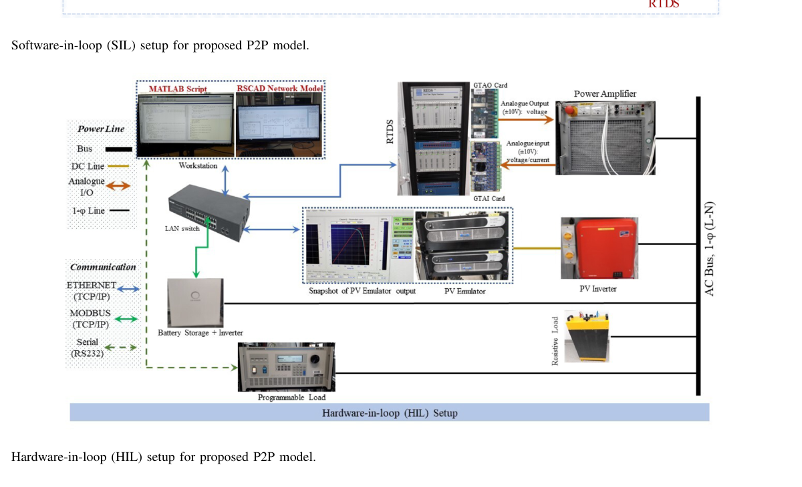
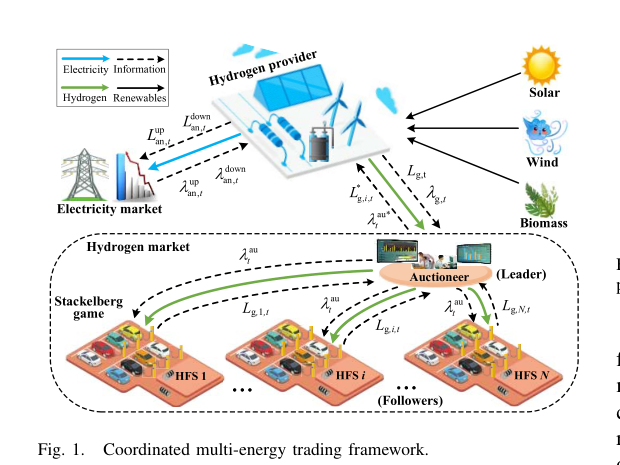
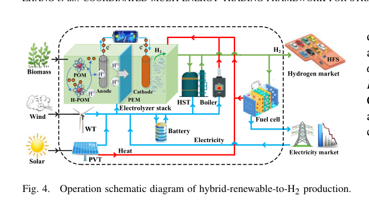
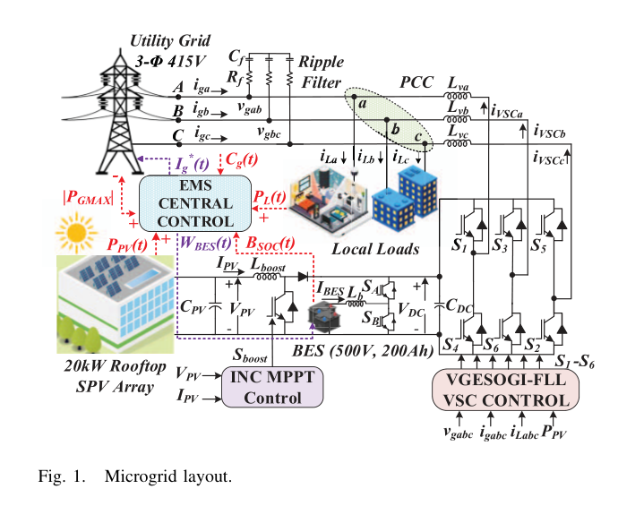
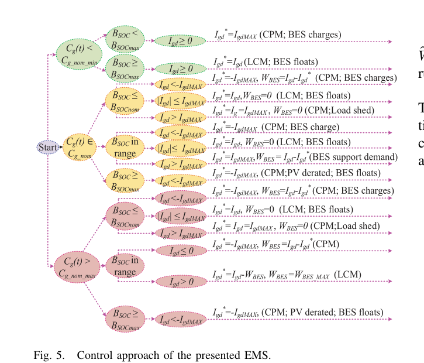

Electricity Market Review
Click on the title of the document to expand or collapse the full text. Subsequent documents will be continuously compiled on this page.
Paper: Yolanda Matamala, Kevin A. Melendez, and Felipe Feijoo
Journal: IEEE Transactions on Smart Grid, 16(4), 3113–3124, 2025
DOI: 10.1109/TSG.2025.3570964
Main topics: multi-microgrid trading; Nash bargaining; Stackelberg game; endogenous prices; locational marginal price; battery flexibility; renewable generation
Quick takeaway
This paper asks a simple but important question:
If several microgrids trade electricity with each other, how can they set a fair trading price when their actions also change electricity prices in the main grid?
The paper combines two ideas:
- A Nash Bargaining Solution (NBS) is used to share the economic benefit fairly among microgrids.
- A Stackelberg game is used to model the interaction between the microgrids and the Independent System Operator (ISO).
The key point is that both the trading price among microgrids and the grid’s Locational Marginal Price (LMP) are treated as endogenous prices. They are determined by the model instead of being fixed inputs.
1. Problem addressed
There are two linked problems.
Problem A — Cooperation may reduce total cost but still be unfair
A group of microgrids can cooperate and minimize their total operating cost.
However, this does not mean every microgrid benefits.
One microgrid may receive most or all of the cost reduction, while another microgrid receives little or no benefit. If a microgrid cannot benefit individually, it has little reason to join the trading scheme.
Problem B — Grid prices are affected by microgrid decisions
Many trading models treat the electricity price from the main grid as a fixed input.
This paper argues that this is incomplete.
When microgrids buy from or sell to the main grid, they change the net demand seen by the grid. This changes generator dispatch and congestion. As a result, the LMP can also change.
Therefore:
microgrid trading decisions affect grid prices, and grid prices affect microgrid trading decisions.
The two sides need to be solved together.
2. Why existing approaches are not enough
The paper highlights two common approaches.
Total-cost or social-welfare optimization
This can find a low-cost solution for the whole group.
The weakness is that it does not guarantee a fair distribution of the benefit among individual microgrids.
Nash bargaining models
Nash bargaining can improve fairness.
However, many previous bargaining studies do not fully capture the feedback between:
- trading prices among microgrids,
- LMPs in the main grid,
- buying and selling decisions,
- storage operation, and
- renewable generation.
This paper tries to connect all of these decisions in one model.
3. Core idea
The proposed framework has two levels.

Upper level — Microgrids
The microgrids cooperate with each other.
They decide:
- how much electricity to buy or sell,
- how to use renewable generation,
- how to charge or discharge batteries,
- how much electricity to exchange with the main grid, and
- the trading price among microgrids.
The trading relationship is modeled using the Nash Bargaining Solution (NBS).
Lower level — Main grid
The Independent System Operator (ISO) operates the main grid.
The ISO solves a Direct Current Optimal Power Flow (DC-OPF) problem.
Its objective includes:
- electricity generation cost, and
- the Social Cost of Carbon (SCC) associated with generator emissions.
The lower-level model produces the Locational Marginal Price (LMP) at each grid node.
4. Why this is a bi-level problem
The microgrids are treated as the leaders.
The ISO is treated as the follower.
The logic is:
- Microgrids make trading and operating decisions.
- These decisions change the power injected into or withdrawn from the grid.
- The ISO redispatches generation.
- The LMP changes.
- The new LMP changes the cost of buying or selling electricity for the microgrids.
So the upper and lower levels are strongly connected.
This is the main reason for using a Stackelberg bi-level model.
5. What does “endogenous price” mean here?
An endogenous price is a price calculated inside the model.
It is not given in advance.
This paper has two important endogenous prices:
- the trading price among microgrids, and
- the LMP from the main grid.
This is one of the main contributions of the paper.
It allows the model to study how renewable generation, storage, electricity trading, and grid operation jointly affect prices.
6. How fairness is defined
The most useful concept in this paper is the disagreement point.
The disagreement point is the cost of a microgrid when cooperation or peer trading is not available.
For microgrid \(m\):
- \(d_m\): disagreement-point cost,
- \(z_m\): cost after cooperation.
The benefit from cooperation is therefore:
\[ d_m-z_m \]
If this value is positive, the microgrid saves money by cooperating.
The basic Nash bargaining idea is to maximize the product of these benefits:
\[ \max \prod_m (d_m-z_m) \]
This is different from only minimizing:
\[ \sum_m z_m \]
The first expression cares about how the benefit is distributed.
The second mainly cares about the total cost.
This difference explains why Nash bargaining can produce a fairer result.
7. How the disagreement point is obtained
The disagreement point is not assumed.
The authors calculate it by solving the market when microgrids do not trade electricity with each other.
This non-cooperative case is formulated as an Equilibrium Problem with Equilibrium Constraints (EPEC).
The resulting cost for each microgrid becomes its disagreement point.
This gives the bargaining model a clear baseline:
A microgrid should not accept cooperation if it performs worse than it would without cooperation.
8. Model solution
The original bi-level model is difficult to solve directly.
The authors convert it into a Mathematical Program with Equilibrium Constraints (MPEC).
The lower-level DC-OPF is replaced by its Karush-Kuhn-Tucker (KKT) optimality conditions.
This creates complementarity constraints and nonlinear terms.
Several techniques are then used to improve solution performance:
- Special Ordered Set Type 1 (SOS1) for complementarity constraints,
- Second-Order Cone (SOC) reformulation for the Nash bargaining objective,
- strong duality for some bilinear terms, and
- a valid inequality to improve the optimization bound.
The numerical results show that SOS1 performs much better than a standard Big-M formulation for the tested cases.
9. Case study
The model is tested on:
- a PJM 5-bus system with two microgrids, and
- an IEEE 14-bus system with four microgrids.
The time horizon is 24 hours.
The microgrids include:
- electricity demand,
- wind and solar generation,
- battery storage, and
- connection to the main grid.
Different renewable-generation levels and battery capacities are tested.
10. Main findings
Renewable generation reduces market prices
When renewable generation increases, the microgrids need less electricity from fossil-fuel generators in the main grid.
In the high-renewable scenario:
- the nodal price decreases by about 1.53%, and
- the trading price among microgrids decreases by about 1.27%.
This shows an important feedback:
more local renewable generation can influence not only microgrid operation but also the market price seen by the microgrids.
Cooperation reduces dependence on the main grid
For the microgrid with lower generation, bargaining reduces electricity purchased from the ISO by about:
- 3% in the low-renewable scenario, and
- 10% in the high-renewable scenario.
Battery storage makes trading more flexible
A microgrid can buy electricity when its nodal price is low, charge its battery, and later sell electricity when prices are higher.
Storage therefore changes both the timing and economic value of electricity trading.
Nash bargaining improves fairness
The grand-coalition approach and the bargaining approach can produce a similar total cost reduction.
But the distribution can be very different.

For the high-generation case reported in the paper:
- total cost reduction: about $1,788,
- grand coalition: the benefit is allocated to only one microgrid,
- Nash bargaining: about $884 for one microgrid and $904 for the other.
This is the clearest result of the paper.
The main value of Nash bargaining is therefore not necessarily a larger total saving.
It is a more acceptable distribution of the saving.
11. What this paper teaches
Lesson 1 — Minimum total cost is not the same as fair cooperation
This is important in systems with independent owners.
A mathematically optimal solution for the whole system may be unacceptable to an individual participant.
Lesson 2 — The baseline matters
The disagreement point gives each participant a reference.
The question is not only:
Is the cooperative system cheaper?
It is also:
Is each participant better off than without cooperation?
Lesson 3 — Electricity prices should not always be treated as fixed inputs
If distributed resources become large enough, their actions can affect grid dispatch and nodal prices.
In that case, price and operation should be modeled together.
Lesson 4 — Storage is not only an energy-balancing device
Battery storage also creates market flexibility.
It allows a microgrid to move electricity across time and respond to price differences.
12. What remains unsolved
Stated by the authors
The authors suggest studying oligopolistic behavior and market manipulation.
For example, large microgrids may strategically change their interaction with the ISO to influence network prices.
Mitigation strategies are therefore an important future topic.
Further limitations visible from the model setup
These are useful research questions that are not fully addressed in this paper:
- Renewable generation is tested through scenarios, but explicit forecast uncertainty is not modeled in the bargaining problem.
- The lower-level network uses DC-OPF, so voltage, reactive power, and detailed AC network behavior are not considered.
- The test systems contain only two or four microgrids.
- The optimization can still require hours to solve as the problem becomes larger.
- The framework assumes that microgrids can cooperate and exchange the information needed for joint bargaining.
- The model focuses on one market period structure rather than repeated strategic behavior over many market days.
13. Research idea triggers
Uncertainty
Can Nash bargaining be combined with:
- stochastic optimization,
- robust optimization, or
- chance constraints
to handle renewable, load, and price uncertainty?
Scalability
Can the centralized model be replaced by a distributed or decomposition-based algorithm for tens or hundreds of microgrids?
Real-time operation
Can the same idea be used in rolling-horizon or real-time trading instead of solving a large day-ahead problem?
Network model
What changes if AC power flow, voltage constraints, or distribution-network constraints are included?
Market power
Can some microgrids manipulate the endogenous LMP?
How should market power be detected or limited?
Fairness
How would the result change if another benefit-allocation rule were used instead of Nash bargaining?
Joint planning and operation
Can storage sizing, renewable sizing, and electricity trading be optimized together?
Multi-energy systems
Can the framework include heat, hydrogen, electric vehicles, or flexible loads?
14. Problem-map tags
fairness
multi-microgrid trading
Nash bargaining
bi-level optimization
Stackelberg game
endogenous electricity price
locational marginal price
battery flexibility
renewable generation
market power
computational scalability
Journal: IEEE Transactions on Smart Grid, 14(5), 3944–3960, 2023
DOI: 10.1109/TSG.2023.3237624
Main topics: blockchain; Peer-to-Peer (P2P) energy trading; security; privacy; energy theft; microgrids
Quick takeaway
This paper focuses on how to make P2P energy trading secure and trustworthy.
Its main concern is not how to optimize electricity prices or trading quantities. Instead, it asks:
How can prosumers trade electricity without relying on one central database, while protecting transaction data from tampering, privacy leakage, and attacks?
1. Problem addressed
P2P energy trading requires frequent communication among prosumers and consumers.
This creates several risks:
- transaction data may be changed or leaked;
- smart-meter data may be manipulated;
- users may collude or report false energy information;
- centralized trading platforms create a single point of failure.
The paper therefore develops a blockchain-based trading platform with additional security and theft-detection mechanisms.
2. Proposed solution
The framework combines four main parts:
Private Ethereum blockchain
Trading records are stored in an immutable distributed ledger.Certificateless Signcryption (CLSC)
Encryption and digital signing are combined in one process to protect confidentiality, authenticity, and integrity.Leader election and consensus
Processing nodes elect a leader and use a consensus process to validate transactions before adding them to the blockchain.Smart-contract energy theft detection
Reported energy use is compared with supplied energy. Large mismatches are treated as possible energy theft.

The main entities are prosumers/consumers, an Energy Request Aggregator, a Data Processing Center, and a trusted Certificate Authority (CA).
3. How trading works
A simplified process is:
energy request → request aggregation → buyer selects seller → encrypted/signed transaction → blockchain validation → payment and power transfer
The Energy Request Aggregator collects requests and displays trading information.
The CA manages keys and authentication.
The blockchain processing nodes validate transactions and store them after consensus.
4. Main results
The proposed signcryption scheme has low computational cost because it avoids expensive bilinear pairing operations.
The reported execution times are:
- signcryption: 1.94 ms
- unsigncryption: 3.88 ms
The authors report lower computation and communication costs than the four comparison schemes.
Blockchain experiments were also carried out on the Ethereum Ropsten network.
For leader election, UDP broadcast performs better than standard TCP and point-to-point UDP because fewer messages are needed.
5. What this paper teaches
The main lesson is:
P2P energy trading is not only an optimization problem. It is also a communication, trust, privacy, and cybersecurity problem.
Blockchain can provide a tamper-resistant transaction record, but blockchain alone is not enough. Authentication, encryption, consensus, and abnormal-energy-use detection are also required.
This paper is therefore more about the digital infrastructure behind energy trading than the economic design of the market.
6. What remains unsolved
Important limitations are:
- The framework does not optimize trading prices or energy quantities.
- Power-flow and network operating constraints are not included in the trading mechanism.
- The system still relies on a fully trusted CA and an Energy Request Aggregator.
- Validation is mainly based on cryptographic analysis and blockchain/network simulation rather than a real microgrid deployment.
- Larger real-time systems may still face latency, throughput, and transaction-cost problems.
7. Research idea triggers
Possible extensions include:
- combining blockchain security with energy-market optimization or game theory;
- including power-flow constraints in blockchain-based P2P trading;
- designing a more decentralized identity and authentication mechanism;
- adding privacy-preserving market clearing;
- testing the platform with real microgrid and smart-meter data;
- combining cyberattack detection with physical power-system anomaly detection.
Problem-map tags: P2P trading · blockchain · cybersecurity · privacy · energy theft · distributed market · microgrid
Journal: IEEE Transactions on Smart Grid, 14(4), 2999–3015, 2023
DOI: 10.1109/TSG.2022.3225520
Main topics: Peer-to-Peer (P2P) trading; cooperative game; network constraints; Shapley value; Software-in-the-Loop (SIL); Hardware-in-the-Loop (HIL)
Quick takeaway
The paper addresses a practical gap in P2P trading:
A financially attractive trade may still be unsafe for the distribution network.
The proposed framework therefore links:
- a financial layer for P2P trading and benefit allocation;
- a physical network layer for checking voltage and branch-flow limits;
- a real-time validation layer using SIL and HIL.
1. Problem addressed
Most P2P studies mainly focus on one of two sides:
- financial design: price, trading quantity, benefit allocation;
- physical network operation: voltage, congestion, losses.
The problem is that a trade can be economically attractive but create voltage violations or excessive power flow in a low-voltage network.
A second gap is validation. Many network-aware P2P methods are only tested by numerical simulation, so their readiness for real implementation is unclear.
2. Why existing approaches are not enough
The paper groups existing work into three broad types:
Financial-layer studies
Good at market design, but often ignore physical network limits.Network studies without full coordination
They analyse network impacts after trading decisions are made.Coordinated financial–network studies
They consider both layers, but are usually validated only in software.
The missing part is:
coordinated P2P trading + network safety + hardware-based validation.
3. Overall framework

The main logic is:
- Prosumers decide intended P2P trading quantities.
- A P2P Market Operator (PMO) checks whether these quantities are compatible with the distribution network.
- If there is no violation, the trade is accepted.
- If there is a violation, the trading quantity is reduced and checked again.
- The final economic benefit is then evaluated and allocated.
The financial decisions remain with the prosumers. The PMO only checks physical feasibility.
4. Financial layer: cooperative trading
The financial layer uses a Canonical Coalition Game (CCG).
All participating prosumers form a grand coalition and cooperate to reduce their total electricity cost.
The model determines:
- P2P selling quantity;
- P2P buying quantity;
- P2P trading price;
- electricity exchanged with the grid.
The P2P price is kept between the Feed-in Tariff (FiT) and the grid Time-of-Use (ToU) price.
This creates an incentive for both sides:
- sellers earn more than the FiT;
- buyers pay less than the retail ToU price.
5. Benefit allocation: Shapley value
The total coalition benefit is not simply shared equally.
The paper uses the Shapley value.
The idea is:
a prosumer receives a benefit according to its marginal contribution to the coalition.
This is used to keep the coalition fair and stable.
The authors also prove that the proposed coalition satisfies the required cooperative-game properties, including grand-coalition formation and stability.
6. Physical network constraint checking
The physical layer checks whether P2P power injections violate the distribution network.
The main constraints are:
- bus voltage limits;
- branch power-flow limits.
An AC network model is used for the actual validation.
If a proposed P2P injection causes a violation, the framework reduces the trading quantity rather than completely blocking the prosumer.
Example:
- intended injection: 6.69 kW
- voltage limit is violated;
- allowed injection after correction: 5 kW
- reduction: 25.26%
This is a key practical idea of the paper:
find the maximum safe trading quantity instead of simply rejecting the trade.
7. SIL and HIL validation
The authors validate the method using both:
- Software-in-the-Loop (SIL);
- Hardware-in-the-Loop (HIL).
The platform combines MATLAB, RSCAD, and a Real-Time Digital Simulator (RTDS).

The HIL setup includes:
- PV emulator;
- PV inverter;
- battery and inverter;
- programmable load;
- resistive load;
- power amplifier.
The purpose is to check whether the P2P algorithm still behaves correctly when connected to realistic hardware.
8. Case study
The test system is a typical Australian low-voltage distribution network.
Key settings:
- 35 buses;
- 102 residential customers;
- 30 prosumers participate in P2P trading;
- ToU price: 17–35 ¢/kWh;
- FiT: 10 ¢/kWh.
Different residential load types are also considered using ZIP load models.
9. Main findings
Network safety
The proposed framework keeps voltage and branch-flow limits within acceptable ranges by adjusting trading quantities when needed.
SIL versus HIL
The voltage difference between SIL and HIL results is reported to be less than 1%.
This supports the practical validity of the simulation framework.
Economic benefit
All participating prosumers reduce their daily electricity costs compared with Business-as-Usual (BAU).
Reported cost reductions range from:
9.65% to 47.03%
The proposed method also performs better than an existing CCG method that does not directly internalize the network constraints.
10. What this paper teaches
Lesson 1 — Economic feasibility is not enough
A P2P trade must also satisfy physical network limits.
Lesson 2 — Network constraints should be part of the trading process
Checking the network only after finalizing the market decision can lead to infeasible trades.
Lesson 3 — Do not block more power than necessary
If a trade causes a violation, reducing the quantity can be better than rejecting the trade completely.
Lesson 4 — HIL is an important step toward real deployment
A useful research path is:
simulation → SIL → HIL → field test
11. What remains unsolved
The paper still leaves several open issues:
- battery dynamics are simplified within each simulation step;
- battery degradation is not modeled;
- privacy and data encryption are not fully developed;
- the PMO remains a centralized network-checking entity;
- uncertainty in PV, load, and prices is not deeply considered;
- scalability for very large numbers of prosumers is not studied in detail;
- HIL is closer to practice, but it is still not a full field deployment.
12. Research idea triggers
Possible extensions include:
- distributed network-feasibility checking without a central PMO;
- stochastic or robust P2P trading under PV/load uncertainty;
- battery degradation and inter-temporal battery constraints;
- privacy-preserving P2P trading;
- large-scale real-time coordination;
- blockchain + cooperative game + network constraints;
- HIL validation of more advanced P2P market designs.
Problem-map tags: P2P trading · network constraints · cooperative game · Shapley value · voltage management · SIL · HIL · real-world implementation
Journal: IEEE Transactions on Smart Grid, 14(2), 1403–1417, 2023
DOI: 10.1109/TSG.2022.3154611
Main topics: hydrogen trading; electricity market; Stackelberg game; auction pricing; biomass electrolysis; stochastic optimization; ancillary services
Quick takeaway
This paper studies a Hydrogen Provider (HP) that participates in both the hydrogen and electricity markets.
The key question is:
How can an HP coordinate hydrogen production, hydrogen sales, and grid-support services so that it earns more while using renewable energy more efficiently?
The framework combines market trading, hydrogen production, storage, and ancillary services in one system.
1. Problem addressed
The paper targets three linked problems.
Green hydrogen is still expensive
Conventional water electrolysis consumes a large amount of electricity. This reduces the economic value of renewable-to-hydrogen conversion.
A hydrogen provider may not fully use its assets
Hydrogen demand changes during the day. During low-demand periods, hydrogen storage and conversion equipment may be underused.
Fixed hydrogen prices do not reflect buyer response
Many hydrogen-trading studies use a fixed hydrogen price. This ignores how Hydrogen Fueling Stations (HFSs) change their purchase quantities when the price changes.
The paper therefore tries to coordinate:
renewable energy → hydrogen production → hydrogen trading → electricity-market services
2. Why existing approaches are not enough
Previous studies often focus on only one part of the problem:
- green hydrogen production;
- hydrogen-market trading;
- strategic bidding;
- electricity-hydrogen coupling.
The authors identify two important gaps:
- hydrogen pricing often does not consider the buyers’ willingness to pay;
- the HP’s ability to earn from both hydrogen sales and electricity ancillary services is not fully used.
The paper also argues that conventional water electrolysis has relatively low conversion efficiency, especially when renewable power fluctuates.
3. Overall electricity-hydrogen trading framework

The main participants are:
- Hydrogen Provider (HP);
- Hydrogen Fueling Stations (HFSs);
- hydrogen auctioneer;
- electricity market / Independent System Operator (ISO).
The HP uses wind, solar, and biomass to produce green hydrogen.
The produced hydrogen can be:
- sold to HFSs;
- stored for later use;
- converted back to electricity through a fuel cell;
- used indirectly to provide reserve services to the power grid.
The electricity and hydrogen markets are cleared separately, but the HP coordinates its operation across both markets.
4. Hydrogen pricing: auction + Stackelberg game
The hydrogen price is not fixed.
The paper develops a Vickrey auction-based pricing mechanism to screen eligible buyers and define a reasonable price range.
Then a single-leader-multiple-follower Stackelberg game is used.
- Leader: hydrogen auctioneer;
- Followers: HFSs.
The logic is simple:
- the auctioneer announces a hydrogen price;
- each HFS chooses how much hydrogen to buy;
- the auctioneer updates the price;
- the process continues until no player wants to change its decision.
The final point is the Stackelberg Equilibrium (SE).
This allows the hydrogen price and trading amount to reflect buyer demand instead of being imposed as fixed values.
5. How the HP makes stacked profit
The HP has two main income sources.
Hydrogen market
It sells green hydrogen to HFSs.
Electricity market
It provides ancillary services, mainly operating reserves.
Typical operation is:
- during high H2 demand, hydrogen is mainly sold to HFSs;
- during low H2 demand, stored hydrogen and spare equipment capacity can be used for electricity-market services.
For up-reserve, stored hydrogen can be converted to electricity through a fuel cell.
For down-reserve, the electrolyzer can absorb additional electricity and convert it to hydrogen when spare hydrogen-storage capacity is available.
The main idea is to use the same assets in more than one market.
6. Hybrid renewable-to-hydrogen production
The paper does not use only conventional water electrolysis.
It considers biomass electrolysis.
The key idea is to replace the difficult oxygen-evolution reaction in water electrolysis with biomass oxidation.
This can reduce the required electrolysis voltage and improve hydrogen-production efficiency.

The HP includes:
- Wind Turbine (WT);
- Photovoltaic-Thermal unit (PVT);
- electrolyzer;
- Hydrogen Storage Tank (HST);
- battery;
- fuel cell;
- electric boiler.
Solar thermal energy and recovered heat are also used to raise the electrolyzer temperature and improve the hydrogen-production process.
7. Role of the battery and hydrogen storage
The Hydrogen Storage Tank (HST) shifts hydrogen between different time periods.
This allows the HP to:
- store excess hydrogen;
- meet later HFS demand;
- keep hydrogen available for electricity-market services.
The battery has a different role.
Renewable power can change quickly. Large current fluctuations can accelerate electrolyzer degradation.
The battery therefore helps smooth the electrolyzer current.
So the two storage devices have different functions:
HST → energy shifting and market flexibility
Battery → fast power smoothing and electrolyzer protection
8. Uncertainty and optimization
The paper considers uncertainty in:
- wind generation;
- solar generation;
- HFS demand-related utility parameters.
A scenario-based stochastic programming method is used.
The study first generates 10,000 scenarios and then reduces them to 100 representative scenarios to lower the computational burden.
The optimization maximizes the HP’s expected daily profit while considering:
- hydrogen sales revenue;
- up/down reserve revenue;
- battery degradation cost;
- electrolyzer operation and degradation cost;
- hydrogen storage limits;
- battery limits;
- electrolyzer temperature/current limits;
- hydrogen-pipeline constraints.
9. Case study
The test system contains:
- one HP;
- four HFSs;
- 3 MW wind capacity;
- 3.5 MW PVT capacity;
- a hydrogen storage tank;
- battery, electrolyzer, fuel cell, and boiler.
A 24-hour day-ahead operation is studied.
Four schemes are compared:
- proposed coordinated framework;
- hydrogen trading only;
- fixed hydrogen price;
- conventional alkaline water electrolysis-based Power-to-Gas (P2G).
10. Main findings
Multi-market participation increases profit
Compared with hydrogen trading only, the proposed framework increases the HP’s daily profit by:
22.05%
The reason is that the HP also earns from electricity reserve services.
Auction pricing improves hydrogen trading
Compared with the fixed-price method, hydrogen sales revenue increases by:
2.25%
The auction-based mechanism also improves the combined utility of the HFSs.
Biomass electrolysis improves renewable utilization
Compared with the conventional Alkaline Electrolysis (AEL)-based P2G method:
- average electrolysis efficiency improves by 25.87%;
- wind-solar accommodation improves by 8.17%.
The iterative game is reasonably scalable
For 4 to 40 HFSs, the proposed Stackelberg-game algorithm converges within at most 37 iterations in the reported tests.
11. What this paper teaches
Lesson 1 — One energy asset can participate in several markets
Hydrogen equipment does not need to earn money only by selling hydrogen.
The same system can also provide flexibility to the electricity market.
Lesson 2 — Price and demand should interact
A fixed hydrogen price misses an important market response:
price changes demand, and demand should influence price.
Lesson 3 — Storage technologies can have different roles
Battery storage and hydrogen storage are not interchangeable.
They operate on different time scales and solve different problems.
Lesson 4 — Production technology affects market performance
The market model and the physical hydrogen-production model are connected.
Higher conversion efficiency changes how much renewable energy can be used and how profitable the trading strategy becomes.
12. What remains unsolved
Several assumptions leave room for further research:
- only one strategic HP is considered;
- the HP is assumed to be a price-taker in the electricity market;
- electricity and hydrogen markets are cleared independently;
- hydrogen delivery is based on pipeline transport assumptions;
- larger competitive hydrogen markets are not modeled;
- uncertainty is handled by scenarios, which can become computationally expensive;
- practical deployment and experimental validation are not included.
The authors specifically identify multiple competing HPs and HFSs as an important future direction.
13. Research idea triggers
Possible extensions include:
- multiple competing HPs using game theory or equilibrium models;
- coordinated clearing of electricity and hydrogen markets;
- market power of large hydrogen providers;
- robust or distributionally robust optimization instead of scenario-based stochastic programming;
- detailed hydrogen-network dynamics and compressor operation;
- long-term sizing plus short-term market operation;
- battery and electrolyzer degradation-aware trading;
- real-time or rolling-horizon hydrogen trading;
- carbon pricing and green-hydrogen certification;
- HIL or pilot-scale validation of electricity-hydrogen market coordination.
Problem-map tags: hydrogen market · electricity-hydrogen coupling · Stackelberg game · auction pricing · ancillary services · biomass electrolysis · stochastic optimization · multi-market revenue
Journal: IEEE Transactions on Smart Grid, 14(4), 2572–2581, 2023
DOI: 10.1109/TSG.2022.3232283
Main topics: smart building; microgrid; Solar Photovoltaic (SPV); Battery Energy Storage (BES); Energy Management Scheme (EMS); real-time tariff; peak demand; power quality
Quick takeaway
This paper develops a real-time rule-based Energy Management Scheme (EMS) for a grid-connected smart building with solar PV and battery storage.
The main idea is simple:
charge the battery when grid electricity is cheap, avoid excessive grid demand, and use or sell stored energy when electricity is expensive.
Unlike Model Predictive Control (MPC) or mathematical optimization, the EMS does not require load/PV forecasts or repeated online optimization.
The paper also adds a separate converter-control method to improve grid-side power quality.
1. Problem addressed
The paper tries to solve four practical problems at the same time:
- reduce the building’s electricity cost;
- avoid Maximum Demand Charges (MDC) caused by excessive grid power;
- keep backup energy available and improve microgrid reliability;
- maintain good grid-side Power Quality (PQ) under nonlinear loads and distorted grid voltage.
The key challenge is to achieve these functions in real time without a computationally heavy optimizer.
2. Why existing approaches are not enough
The authors point out several limitations of existing EMS methods.
MPC and optimization-based EMS
They can produce good schedules, but often require:
- forecasts of PV and load;
- accurate future electricity prices;
- repeated online optimization;
- higher computation time.
Forecast errors can also reduce the quality of the scheduled solution.
Existing rule-based EMS
Rule-based methods are much simpler, but many do not explicitly consider:
- real-time tariff changes;
- maximum demand limits;
- peak-demand management;
- power quality.
The proposed method tries to keep the simplicity of rule-based control while adding these practical functions.
3. Microgrid structure

The system contains:
- rooftop SPV;
- Battery Energy Storage (BES);
- local smart-building loads;
- utility grid;
- bidirectional battery converter;
- Voltage Source Converter (VSC).
The EMS mainly decides how much power should come from the grid and how the battery should charge or discharge.
4. Core idea: real-time rule-based EMS
The EMS uses only current system information.
Main inputs are:
- load demand \(P_L\);
- PV generation \(P_{PV}\);
- battery State of Charge (SOC);
- real-time grid tariff \(C_g(t)\);
- maximum allowed grid power \(P_{GMAX}\).
The control decision is therefore based on:
current tariff + current load/PV balance + current battery SOC
rather than a forecasted future trajectory.
5. Three tariff periods and their control logic
The electricity price is divided into three conditions.
Off-peak period
Grid electricity is cheap.
Main action:
charge the battery from the grid, provided the battery has enough remaining capacity.
The purpose is to store cheap electricity for later use.
Normal-price period
The battery normally remains in a floating state.
PV is first used for the local load. Surplus PV can be exported.
If grid demand approaches the maximum limit, the battery can provide power leveling.
Peak-price period
Grid electricity is expensive.
Main action:
discharge the battery to reduce grid purchase or export power to the grid.
This allows the building to benefit from high electricity prices.

6. Peak demand and maximum demand charge
The EMS does not only follow electricity price.
It also enforces a grid-power limit:
\[ -P_{GMAX} < P_G < P_{GMAX} \]
If the building demand would push grid power above the allowed limit, the battery discharges to reduce the grid demand.
This helps avoid the Maximum Demand Charge (MDC).
If the battery SOC is already too low and the grid limit would still be exceeded, the original rule set may require load shedding.
This is an important practical limitation of the method.
7. Role of the battery
The battery has several functions:
- store cheap off-peak electricity;
- store excess PV generation;
- discharge during high-price periods;
- reduce peak grid demand;
- provide short-term backup during disturbances.
The battery is therefore used for both:
energy-cost arbitrage and power-leveling support.
Its charging/discharging rate and SOC are limited for safe operation.
8. Power quality control: VGESOGI-FLL
The EMS handles energy and cost.
A second control layer handles power quality.
The paper proposes a Variable Gain Enhanced Second-Order Generalized Integrator Frequency-Locked Loop (VGESOGI-FLL) for the VSC.
Its purpose is to:
- remove dominant current harmonics;
- reject DC offsets;
- track grid-frequency changes;
- keep grid currents balanced and nearly sinusoidal;
- provide reactive-power support;
- operate the grid side close to unity power factor.
The controller changes its filter gains during dynamic conditions to obtain faster response.
9. Simulation and hardware validation
The method is tested in both simulation and laboratory hardware.
The studies include:
- summer and winter operating profiles;
- distorted grid voltage;
- load unbalance;
- a 5 Hz grid-frequency jump;
- voltage sag;
- nonlinear loads.
For the 5 Hz frequency jump, the Frequency-Locked Loop (FLL) tracks the new frequency within about 40 ms.
The hardware prototype uses a solar simulator, BES, bidirectional converter, VSC, and a dSPACE 1103 controller.
10. Main findings
Energy management
In both summer and winter comparisons, the proposed EMS has:
- the lowest net energy absorbed from the grid;
- the highest reported net profit/cost saving among the compared EMS schemes.
For the summer case, the reported values are:
- net average grid energy: 2 kWh/day;
- net average profit plus cost saving: Rs 540/day.
Power quality
In hardware tests, one grid-voltage phase has a Total Harmonic Distortion (THD) of 8.91%.
The VSC control keeps the grid-current THD within the 5% limit referenced from IEEE Std 519.
11. What this paper teaches
Lesson 1 — Simple rules can be useful when fast real-time decisions are needed
Not every EMS needs MPC, Mixed-Integer Linear Programming (MILP), or another heavy optimizer.
A rule-based controller can be attractive when:
- computation must be very fast;
- forecasts are poor or unavailable;
- the operating logic is easy to define.
Lesson 2 — Tariff arbitrage and peak-demand management are different objectives
A battery can earn value by shifting energy across tariff periods, but it can also reduce maximum grid demand and avoid demand penalties.
Lesson 3 — Energy management and power quality are separate control problems
The EMS determines how much power should flow.
The VSC controller determines how that power should be exchanged with acceptable waveform quality.
This distinction is useful when designing smart-building microgrids.
12. Limitations
The paper itself identifies several limitations:
- decisions depend strongly on accurate real-time tariff information;
- battery SOC estimation must be accurate;
- communication or estimation delays can lead to wrong EMS decisions;
- some operating states require load shedding.
Additional limitations visible from the framework are:
- the EMS follows predefined rules rather than solving a future-horizon optimization problem;
- future PV, load, and price information is intentionally not used;
- battery degradation is not explicitly included in the economic objective;
- the paper does not study uncertainty in a formal stochastic or robust framework.
So the method gains simplicity and speed, but gives up some of the future-looking capability of predictive optimization.
13. Research idea triggers
Possible extensions include:
- adaptive rules that update automatically from historical operation;
- MPC or Economic MPC (EMPC) using the rule-based EMS as a benchmark;
- battery degradation-aware tariff control;
- stochastic or robust control under PV/load uncertainty;
- demand-response flexibility instead of load shedding;
- real-time electricity pricing instead of predefined tariff bands;
- coordinated building thermal loads, EVs, and battery storage;
- learning-based EMS with hard safety constraints;
- combining economic EMS and power-quality objectives in one coordinated framework.
Problem-map tags: smart building · rule-based EMS · real-time tariff · battery arbitrage · maximum demand charge · peak shaving · power quality · hardware validation